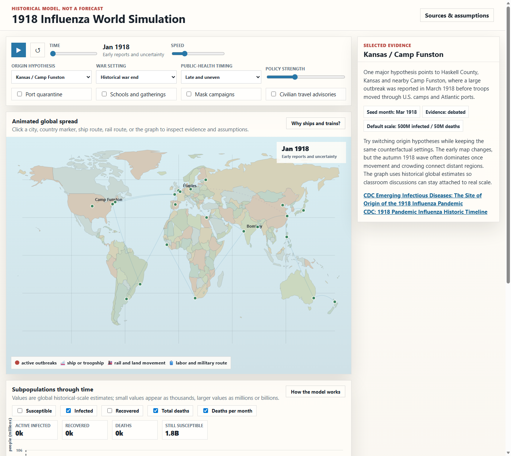
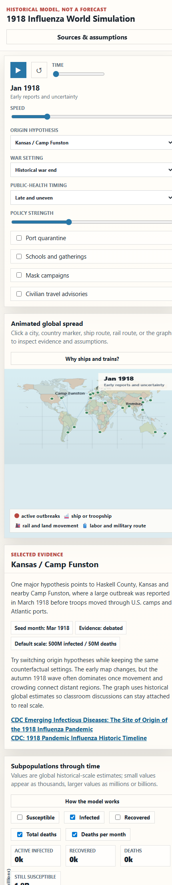

Original Goal
The project began with a request for a web page where the general public, including high school students and younger learners, could interact with a simulation of the 1918 flu. The desired experience was global, animated on a world map, historically grounded, and able to compare origin hypotheses and counterfactuals such as no World War I, a later war ending, and different public-health policies.
Map and Motion
Show spread on a world map with ships, trains, and other movement routes.
Historical Grounding
Use public sources, expose uncertainty, and link evidence from clickable UI elements.
Exploration
Support play/pause, speed controls, counterfactual settings, and subpopulation graphs.
Evolution Timeline
The first design decision was to build a static single-page app. The first version used an educational network model: cities and regions as nodes, transport routes as weighted links, and S/I/R/D groups for susceptible, infected, recovered, and dead.
The initial implementation added a canvas world map, origin selector, war and public-health controls, clickable evidence panels, source links, and a graph of model subpopulations.
Feedback revealed that the first graph values were too small and confusing. The graph was changed to display global historical-scale estimates: the default historical scenario ends near about 500 million infections and at least 50 million deaths, while the local node model still drives the animation.
The rough hand-drawn land shapes were replaced with Natural Earth 1:110m Admin 0 country boundaries, a public-domain map dataset.
Susceptible was hidden by default because it overwhelmed the other series. The graph gained wave bands, date labels along the x-axis, y-axis units, and a deaths-per-month line so the wave pattern is easier to see.
Ship and train route markers were changed to smaller emoji vehicles. A bug where vehicles appeared to jump and vanish was fixed by separating the route animation clock from the timeline month-advance clock.
An optional OpenAI Responses API question panel was added. It can use a user-provided API key and, when enabled, OpenAI web search to answer historical data questions with citations and small SVG graphs.
Follow-up questions were improved by keeping a short in-memory Ask history. Markdown, citation markers, truncated SVGs, and common LaTeX formulas were handled more cleanly in the answer renderer.
Current App
The current simulator opens directly from index.html. It includes a global Natural Earth map, route animation, origin hypotheses, war and public-health counterfactuals, clickable evidence panels, historical-scale graphs, and an Ask panel.
The graph now grows as the simulation advances instead of revealing the entire future immediately. June 1920 is treated as the end of the classroom run, not a claim that influenza disappeared at that date.


Key Design Lessons
Numbers need a scale story
The early node-scale counts were misleading. The current design separates the internal educational model from global historical-scale display values.
Graphs need context
Showing only cumulative deaths hides wave timing. Adding monthly deaths, wave bands, axis labels, and date ticks made the graph much more teachable.
AI answers need good presentation
The Ask panel needed conversation memory, citation cleanup, plain-text math, optional search, and safer handling of generated SVG.
Files
The main project files are:
index.html: simulator UIapp.js: model, rendering, interaction, and Ask logicstyles.css: simulator stylingmap-data.js: generated Natural Earth country boundariesfavicon.svg: app iconREADME.md: brief technical summaryproject-history.html: this design-history page